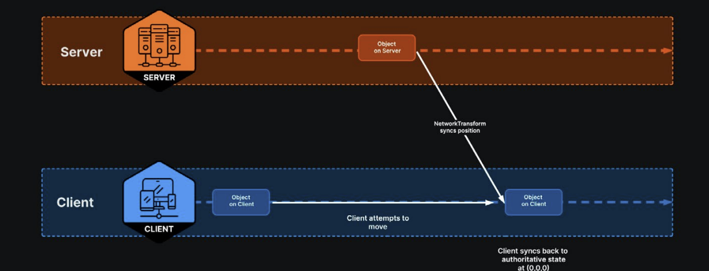

Chapter 2: Netcode for GameObjects
1. Introduction
For casual cooperative multiplayer games, Unity recommends using the Netcode for GameObjects (NGO) package. This high-level solution simplifies developing multiplayer games by abstracting networking logic, making it easier to manage the game state for all players.
Netcode for GameObjects includes a few key features:
- NetworkObject: This represents any object in the game that should be synchronized over the network. It handles object spawning, despawning, and ownership.
- NetworkBehaviour: This is a specialized MonoBehaviour that provides networking capabilities. It offers built-in callbacks for handling network events and allows you to write server-side and client-side code.
- Remote procedure calls (RPCs)These send messages and invoke methods on remote instances of your GameObjects using Server and Client RPCs.
- NetworkVariable: This is a class that allows you to sync states across the network.
- NetworkManager: This is a central component that manages the network state of your game, handling tasks such as connection, disconnection, and scene management.
These components work at the application layer to help you implement multiplayer functionality. Netcode for GameObjects is designed to be simple yet powerful, providing the tools needed to create robust and scalable multiplayer games
In this chapter we will explain and work with all of these elements.
NetworkManager
Every project will need a NetworkManager component to support networked multiplayer. This essential component manages the network state of your project, handling connections and network configurations.
In the NetworkManager component, configure the Network Transport layer. Choose Unity Transport
This attaches a UnityTransport component to the GameObject. The transport layer is responsible for low-level networking tasks, such as connection management, data transmission, and packet encryption.
Though you don’t need to modify these settings yet, this component can help simulate network conditions (e.g., latency, packet loss, and jitter) for testing and debugging in the Editor.
Unity Transport
The Unity Transport Package is a netcode-agnostic library that provides a low-level network layer focused on performance and reliability – a modern, secure, and portable transport library that extends the conventional UDP with advanced features:
- Reliability: Adds reliable communication over UDP, ensuring critical messages are delivered without the overhead of TCP
- Security: Incorporates encryption and authentication to protect data from unauthorized access
- Performance: Optimized for low latency and high throughput
- Cross-platform compatibility: Designed to work seamlessly across different platforms and devices
NetworkObjects
is a required component for any GameObject that needs to be networked or synchronized across different clients in a multiplayer game. When you add a NetworkObject component to a GameObject, it becomes “networkable,” meaning that its state and behavior can be shared and updated across the network.
Each NetworkObject has a few identifiers:
- The GlobalObjectIdHash identifies the prefab asset in the project.
- The NetworkObjectId is the unique identifier that differentiates instances of the same prefab asset.
- The OwnerClientId represents the client that “owns” the object (see Authority below).
These identifiers help the NetworkManager keep track of it and ensure that its state is consistent across all connected clients. NetworkObjects can be dynamically created (spawned) or destroyed during gameplay.
Spawning a NetworkObject makes it appear on all connected clients. Each NetworkObject has an owner, typically the client that controls its behavior and state.
Player NetworkObjects
Each player can optionally have their own prefab called a Player NetworkObject. This is a special type of NetworkObject that often contains the character controller and visual representation of the player in the game.
Player NetworkObjects often store and sync player-specific data, such as the player’s name, score, inventory, or other relevant information. This data is synchronized across the network to ensure that all connected players have a consistent view of the game state.
When a client connects, the NetworkManager creates a Player NetworkObject that is “owned” by the corresponding player. This means that the player has authority over their PlayerObject and can control its behavior and state
To set up a Player NetworkObject, start by creating a standard prefab GameObject in your project. This prefab acts as a template for the PlayerObject, containing the necessary components and scripts that define the player’s behavior and appearance.
Then, add the appropriate netcode components. These might include:
- NetworkObject: Every object that will be networkable needs a NetworkObject component. This contains properties and events related to spawning, despawning, and ownership
- NetworkBehaviours: These scripts add networking behavior to their MonoBehaviour base class. NetworkBehaviours contain network variables, remote procedure calls (RPCs), and network callbacks.
- NetworkAnimators: This component syncs animation states and parameters between clients.
- NetworkTransform: This component ensures that the player’s position, rotation, and scale are replicated in real-time from the server to all connected clients.
Player NetworkObjects are often responsible for handling player input. When a player performs an action, such as moving or interacting with the game world, the input is processed and then propagated to other connected players as needed.
Player logic involves a combination of MonoBehaviours for direct game mechanics and NetworkBehaviours for managing network states. Non-networked components, such as character controllers and animators, function normally on each player’s local instance.
Using these components locally not only optimizes performance but also reduces network traffic, which can be important when working with limited bandwidth between your clients.
Network Behaviour
A NetworkBehaviour is a specialized type of MonoBehaviour, designed for networked logic. It provides the framework necessary for synchronizing actions and states across different game clients.
NetworkBehaviour shares the same lifecycle events as MonoBehaviours but also incorporates several network-specific features:
- RPC Methods: This is a specialized variable designed for synchronized state management across the network. Changes to a NetworkVariable on the server are automatically propagated to all clients.
- NetworkVariable: This is a specialized variable designed for synchronized state management across the network. Changes to a NetworkVariable on the server are automatically propagated to all clients.
- OnNetworkSpawn and OnNetworkDespawn: These lifecycle methods are triggered when a NetworkBehaviour is instantiated or destroyed. OnNetworkSpawn is used for initialization (think of OnEnable or Start except for networked behavior). OnNetworkDespawn handles cleanup before an object is removed from the network (e.g., analogous to OnDestroy or OnDisable).
- Ownership: NetworkBehaviour allows specific clients (or the server) to have ownership over certain objects. This concept of authority, where either a client or the server can “own” a NetworkObject, ensures that only designated players should be able to control or interact with specific objects.
Authority and ownership properties
By default, the server owns NetworkObjects, although connected and approved clients can also own NetworkObjects using the SpawnWithOwnership method. Netcode for GameObjects is server-authoritative, which means that only the server is authorized to spawn and despawn NetworkObjects.
NetworkBehaviour includes some quick ways to determine the authority and ownership of an instance:
- IsClient indicates if the instance is running on a client.
- IsServer indicates if the instance is running on a server.
- IsHost indicates if the instance is running on a host, which is both a server and a client.
- IsLocalPlayer indicates if the associated NetworkObject is the local player object.
- IsOwner indicates if the local player owns the object or if the object is the local player object.
- IsPlayerObject indicates if the GameObject represents a network player, typically controlled by a specific client.
- IsSceneObject indicates if the GameObject is part of the scene by default and not spawned dynamically during gameplay. A scene object is usually managed by the server for consistent state across the network.
Inspecting the NetworkObject at runtime shows some of these properties.
Sync using a NetworkTransform and NetworkAnimator
Though the NetworkBehaviour lets us spawn the same player instance on multiple clients, synchronizing its movements across the network requires additional components.
Adding the NetworkTransform component to your NetworkObject prefab, allows you to sync the position, rotation, and scale of a Transform, while the NetworkAnimator syncs the animation states. When the host player runs around the playground environment, its movements transfer to the client in Multiplayer Play Mode.
However, not everything won't work as expected. While the host syncs correctly to the client, the client’s movements may not reflect on the host. The client receives input, as indicated by the character animating in place, but the player instance doesn’t move. This happens because the NetworkTransform operates under server authority, syncing only the server’s position to the client. When you try to move the player on the client, the server overrides the client’s desired position, resetting it to (0, 0, 0).
Applying client authority
By default, NetworkTransform operates in server authoritative mode. Changes to the transform axis are detected on the server-side and pushed to connected clients. Trying to transform the player on the client fails because the server – maintaining an authoritative state with the transform set to (0,0,0) – overrides these client-side changes.

To resolve this, one approach is to transfer authority from the server to the client. This allows the client to control its own transform without being overridden by the server. To implement this behavior, we can create a ClientNetworkTransform component.
This overrides the OnIsServerAuthoritative method and returns false. On the Player NetworkObject prefab, replace the NetworkTransform with the custom ClientNetworkTransform, and similarly, you can also create a client-driven NetworkAnimator.
Client-driven behaviors are also a way to reduce latency in networked applications. In “owner authoritative mode,” networked behaviors can act immediately and responsively. The client doesn’t need to wait for a packet to make a round trip to the server and back.
However, exercise care when creating such client-driven behaviors: they can improve the user experience for each player, but also introduce security risks. Owner authoritative mode opens your application to mods or hacks; in any online competitive game, players will cheat if given the chance. To prevent this and make your application more secure, opt for server authority.
Syncing with server authority
Though you can allow some client authority for responsive gameplay, some movements can only be done on the server side. Generally, you should use server authority to prevent any potential imbalances or unfair advantages that could arise from client-controlled actions.
For instance, allowing clients to choose their spawn locations on the game map could give them an undue advantage, depending on the layout of the map. Instead, it’s more equitable to have the server randomly assign them to one of a set of predetermined spawn points.
This synchronization is essential for the multiplayer experience. Components such as NetworkTransform and NetworkAnimator facilitate this process right out of the box, but for gameplay, you’ll need to customize your own NetworkBehaviours as well.
Network synchronization
Network synchronization is essential for maintaining a consistent – and fair – gaming experience for all players.
You’ve already seen how to synchronize player movements and animations with the Player NetworkObject using a client-driven model. However, gameplay often involves more than just the player character. Depending on your game design, your player may need to shoot projectiles, open doors, or interact with other scene objects. These interactions will need to be networkable, with their own game states that need to be synced between the clients and the server.
In this section, we will set up client-server communication for gameplay actions, where the player may interact with part of the game environment. This involves implementing networked game states and sending remote procedure calls (RPCs) to and from the server.
Network variables
A NetworkVariable is a specialized variable designed for synchronized state management across the network. Changes to a NetworkVariable on the server propagate to all clients. This is ideal for continuously synchronized data, such as positions or health points.
While a NetworkTransform is specific to syncing transform data (position, rotation, scale), a NetworkVariable can sync more general data types, including primitive types, custom structs, and other data necessary for game state management.
When working on a client, you can’t change the NetworkVariable directly because it is serverauthoritative. Instead, the client must notify the server to make any changes. The server updates the state and propagates it back, and only then does the client see the change take effect.
To handle communication for changes like this, we use an RPC. RPCs can allow one device to require another device to perform specific actions or updates. RPCs can be called from the client to the server, or vice versa.
RPCs
RPCs allow you to invoke functions on the server or other clients remotely. Methods marked with [Rpc(SendTo.Server)] are called on the server from a client, and those marked with [Rpc(SendTo.Client)] are called on clients from the server. You can also use the legacy syntax [ServerRpc] or [ClientRpc] to indicate a server RPC or client RPC here.
RPCs are much like other methods, except they must follow a few conventions:
- Rpc attribute: Annotate your method with the [Rpc] attribute and specify a possible target, e.g., [Rpc(SendTo.Server)] will call the method only on the server.
- Naming convention: End the method name with the suffix “Rpc” e.g., DoSomethingRpc.
RPCs are better suited for discrete events, such as player actions or specific game state changes that do not need continuous synchronization.
RPCs versus NetworkVariables
When synchronizing data, choosing between NetworkVariables and RPCs depends on the use case:
- NetworkVariables and NetworkTransforms are ideal for continuously synchronized data, such as positions, health points, or in this case, the color state of the trigger. Here, the color trigger uses a NetworkVariable to store its active color. Use cases: Health points, positional data, game scores
- Remote procedure calls (RPCs) are better suited for discrete events, such as player actions or specific game state changes that do not need continuous synchronization. In this example, the RPC notifies all clients when a player enters the trigger zone, prompting the server to change the color based on the player’s ID. Use cases: Player actions (e.g., shooting, using an ability), game events (e.g., spawning, game start, game won)
Both mechanisms are essential for data synchronization in networked games, where NetworkVariables manage ongoing states and RPCs handle specific events and actions.
These gameplay examples can help you determine when to use NetworkVariables or RPCs.
| Task/system | RPCs | NetworkVariables |
|---|---|---|
| Inventory management | Notify clients when an item is picked up or used, to be added or removed from the inventory. | Maintain the current inventory for each player. The inventory can be a NetworkList that syncs the list of items. |
| Combat systems | Execute combat actions like attacks or special moves. An RPC can apply damage and effects. | Track the health and status of each player. Health points and active status effects can be synced using NetworkVariables. |
| Environmental interactions | Trigger specific actions like opening a door or activating a mechanism. | Maintain the state of interactive objects, such as whether a door is open or closed. |
| Objectives | Signal the completion of an objective. | Track ongoing progress toward an objective. Store the number of items collected or completed tasks in a NetworkVariable. |